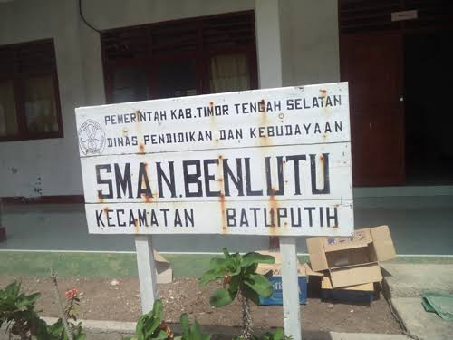

Jelajahi Dunia dengan Mudah
Tiket, Akomodasi, dan Kebutuhan Digital dalam Satu Genggaman. Didukung oleh AI untuk perjalanan yang lebih cerdas.
Lihat Layanan KamiLayanan Terlengkap Kami
Tiket Pesawat
Terbang ke seluruh destinasi domestik dengan harga terbaik.
Tiket PELNI
Nikmati perjalanan laut yang nyaman dan aman bersama PELNI.
Tiket DLU Ferry
Solusi penyeberangan antar pulau yang cepat dan efisien.
Tiket Kereta Api
Perjalanan darat yang bebas macet dengan kereta api.
Voucher Hotel
Pesan penginapan dan hotel di berbagai kota dengan mudah.
Pulsa & Paket Data
Isi ulang pulsa dan paket data semua operator, kapan saja.
Token Listrik
Beli token listrik prabayar dengan cepat tanpa antre.
Voucher Game
Top up game favoritmu dan jadilah pemenang.
Kecerdasan Buatan Untuk Anda
AI Perencana Perjalanan
Bingung mau ke mana? Cukup beritahu tujuan dan preferensi Anda, AI kami akan menyusun rencana perjalanan lengkap dengan destinasi, aktivitas, dan jadwal yang optimal.
AI Penerjemah Instan
Jangan biarkan bahasa menjadi halangan. Aplikasi kami dilengkapi penerjemah AI yang dapat menerjemahkan percakapan dan teks secara real-time di mana pun Anda berada.
AI Estimasi Biaya
Rencanakan anggaran perjalanan dengan lebih akurat. AI kami akan menghitung perkiraan total pengeluaran Anda, mulai dari tiket, akomodasi, makan, hingga oleh-oleh.
Kisah di Balik A-GIN TRAVEL
Nama Pendiri: APRIS SILLA
Lahir: Hane, 03 Agustus 1999
Asal: Desa Hane, Kecamatan Batu Putih, TTS, NTT
A-GIN TRAVEL didirikan dengan semangat mempermudah perjalanan dan kebutuhan digital masyarakat, khususnya untuk menghubungkan Nusa Tenggara Timur (NTT) dengan seluruh penjuru Indonesia.
Semangat ini lahir dari sebuah perjalanan pribadi yang unik. Berbekal ijazah dari SMA Negeri Benlutu, sebuah mimpi besar untuk membangun teknologi mulai tumbuh. Misi ini dimulai dari langkah sederhana: belajar secara otodidak langsung dari rumah.
Tanpa bimbingan formal, setiap baris kode dan tantangan teknis dihadapi secara mandiri, dengan rasa ingin tahu sebagai kompas dan kecerdasan buatan (AI) sebagai rekan diskusi yang tak kenal lelah. Aplikasi ini adalah bukti nyata bahwa semangat dan kemauan kuat, yang didukung oleh teknologi, dapat mewujudkan impian.
Almamater SMA Negeri Benlutu, tempat semangat membangun teknologi pertama kali bersemi.
Lokasi Kami di Desa Hane
Hubungi Kami
Siap merencanakan perjalanan atau butuh bantuan? Tim kami siap melayani Anda!